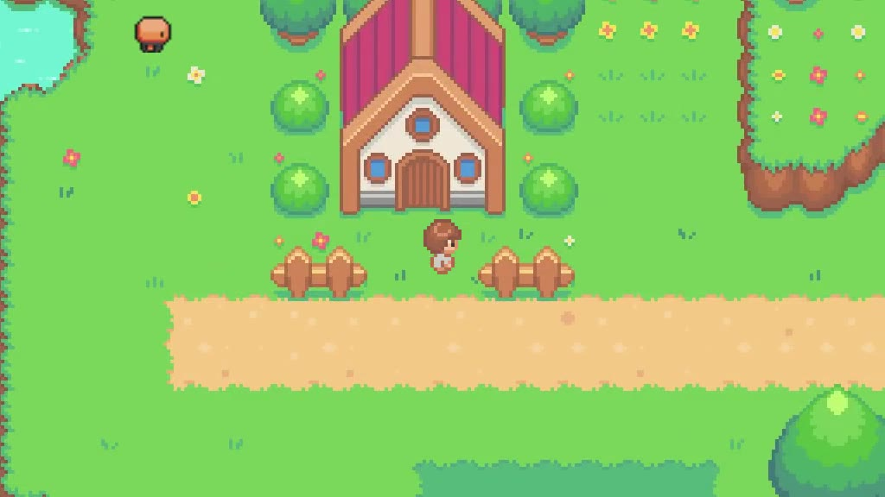

Experience
Explore a pixel-art world and move from environmental encounters into a turn-based creature battle.

Description
The game combines an explorable map with animated characters and encounter regions. Navigation establishes the context for a battle rather than acting as a separate visual demo.
During an encounter, the interaction changes from movement through the world to selecting and resolving battle actions. That transition is the central link between the exploration and combat parts of the project.

Detailed features
Role-playing exploration
Movement and viewpoint work together to make the space readable. The player uses the controls to choose a route, judge distance, and position the character for the next interaction.
Character encounters
An encounter groups threats and objectives into a readable sequence. Progress is communicated through the state of the participating characters and the result of their actions.
Battle presentation
An encounter groups threats and objectives into a readable sequence. Progress is communicated through the state of the participating characters and the result of their actions.
Build summary
The project is presented with JavaScript · HTML Canvas. Its implementation connects the input or controls, the project’s changing state, and the rendered interface. The Source action opens the saved code or build material for this entry.
- Technology
- JavaScript · HTML Canvas
- Scope
- Interactive project
- Presentation
- 1080p footage unavailable
Feature video
1080p project video unavailable
A verified recording of this project at the requested resolution has not been published.